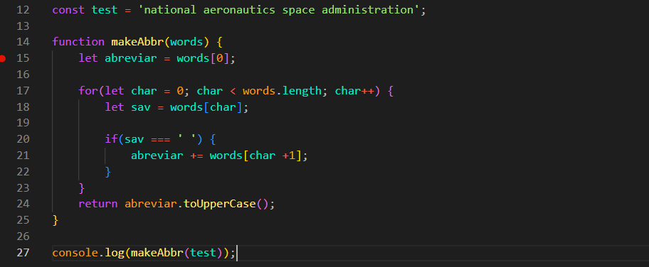

Tarefa: Make Abbr
Intro
Nesta tarefa, implemente a função makeAbbr que aceita a string words e retorna uma abreviação em maiúsculas
A string words contém uma ou mais palavras separadas por um único espaço.
Nesta tarefa, implemente a função makeAbbr que aceita a string words e retorna uma abreviação em maiúsculas
A string words contém uma ou mais palavras separadas por um único espaço.
